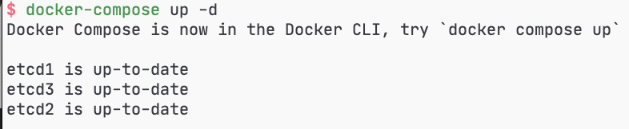

说明
使用docker-compose搭建etcd集群环境
etcd是一个集群环境，用来管理微服务架构下面的配置管理功能。 A distributed, reliable key-value store for the most critical data of a distributed system.
这篇文章是一个基础步骤如何搭建etcd的docker集群环境。 我们使用docker-compose来搭建如下的etcd集群环境：
安装
集群包含三个node：etcd1, etcd2, etcd3
1、下载consul docker image
docker pull quay.io/coreos/etcd
2、编辑docker-compose.yaml文件（在随意目录下创建本文件即可）
version: '2'
networks:
byfn:
services:
etcd1:
image: quay.io/coreos/etcd
container_name: etcd1
command: etcd -name etcd1 -advertise-client-urls http://0.0.0.0:2379 -listen-client-urls http://0.0.0.0:2379 -listen-peer-urls http://0.0.0.0:2380 -initial-cluster-token etcd-cluster -initial-cluster "etcd1=http://etcd1:2380,etcd2=http://etcd2:2380,etcd3=http://etcd3:2380" -initial-cluster-state new
ports:
- 2379
- 2380
networks:
- byfn
etcd2:
image: quay.io/coreos/etcd
container_name: etcd2
command: etcd -name etcd2 -advertise-client-urls http://0.0.0.0:2379 -listen-client-urls http://0.0.0.0:2379 -listen-peer-urls http://0.0.0.0:2380 -initial-cluster-token etcd-cluster -initial-cluster "etcd1=http://etcd1:2380,etcd2=http://etcd2:2380,etcd3=http://etcd3:2380" -initial-cluster-state new
ports:
- 2379
- 2380
networks:
- byfn
etcd3:
image: quay.io/coreos/etcd
container_name: etcd3
command: etcd -name etcd3 -advertise-client-urls http://0.0.0.0:2379 -listen-client-urls http://0.0.0.0:2379 -listen-peer-urls http://0.0.0.0:2380 -initial-cluster-token etcd-cluster -initial-cluster "etcd1=http://etcd1:2380,etcd2=http://etcd2:2380,etcd3=http://etcd3:2380" -initial-cluster-state new
ports:
- 2379
- 2380
networks:
- byfn
3、启动服务（在步骤2中docker-compose.yaml文件所在的路径执行如下命令）
docker-compose up

4、验证集群的状态
验证从三个node返回的v2/members数据是一样的值。
$ docker ps
CONTAINER ID IMAGE COMMAND CREATED STATUS PORTS NAMES
8d08b178a8cb quay.io/coreos/etcd "etcd -name etcd3 -a…" 51 seconds ago Up 41 seconds 0.0.0.0:57858->2379/tcp, 0.0.0.0:57859->2380/tcp etcd3
dfcef002b206 quay.io/coreos/etcd "etcd -name etcd2 -a…" 51 seconds ago Up 46 seconds 0.0.0.0:57854->2379/tcp, 0.0.0.0:57855->2380/tcp etcd2
1b72f43e3426 quay.io/coreos/etcd "etcd -name etcd1 -a…" 51 seconds ago Up 42 seconds 0.0.0.0:57856->2379/tcp, 0.0.0.0:57857->2380/tcp etcd1
$ curl -L http://127.0.0.1:57858/v2/members
{"members":[{"id":"ade526d28b1f92f7","name":"etcd1","peerURLs":["http://etcd1:2380"],"clientURLs":["http://0.0.0.0:2379"]},{"id":"bd388e7810915853","name":"etcd3","peerURLs":["http://etcd3:2380"],"clientURLs":["http://0.0.0.0:2379"]},{"id":"d282ac2ce600c1ce","name":"etcd2","peerURLs":["http://etcd2:2380"],"clientURLs":["http://0.0.0.0:2379"]}]}
$ curl -L http://127.0.0.1:57854/v2/members
{"members":[{"id":"ade526d28b1f92f7","name":"etcd1","peerURLs":["http://etcd1:2380"],"clientURLs":["http://0.0.0.0:2379"]},{"id":"bd388e7810915853","name":"etcd3","peerURLs":["http://etcd3:2380"],"clientURLs":["http://0.0.0.0:2379"]},{"id":"d282ac2ce600c1ce","name":"etcd2","peerURLs":["http://etcd2:2380"],"clientURLs":["http://0.0.0.0:2379"]}]}
$ curl -L http://127.0.0.1:57856/v2/members
{"members":[{"id":"ade526d28b1f92f7","name":"etcd1","peerURLs":["http://etcd1:2380"],"clientURLs":["http://0.0.0.0:2379"]},{"id":"bd388e7810915853","name":"etcd3","peerURLs":["http://etcd3:2380"],"clientURLs":["http://0.0.0.0:2379"]},{"id":"d282ac2ce600c1ce","name":"etcd2","peerURLs":["http://etcd2:2380"],"clientURLs":["http://0.0.0.0:2379"]}]}
也可以用命令行工具etcdctl：
$ docker exec -t etcd1 etcdctl member list
ade526d28b1f92f7: name=etcd1 peerURLs=http://etcd1:2380 clientURLs=http://0.0.0.0:2379 isLeader=false
bd388e7810915853: name=etcd3 peerURLs=http://etcd3:2380 clientURLs=http://0.0.0.0:2379 isLeader=false
d282ac2ce600c1ce: name=etcd2 peerURLs=http://etcd2:2380 clientURLs=http://0.0.0.0:2379 isLeader=true
$ docker exec -t etcd3 etcdctl -C http://etcd1:2379,http://etcd2:2379,http://etcd3:2379 member list
ade526d28b1f92f7: name=etcd1 peerURLs=http://etcd1:2380 clientURLs=http://0.0.0.0:2379 isLeader=false
bd388e7810915853: name=etcd3 peerURLs=http://etcd3:2380 clientURLs=http://0.0.0.0:2379 isLeader=false
d282ac2ce600c1ce: name=etcd2 peerURLs=http://etcd2:2380 clientURLs=http://0.0.0.0:2379 isLeader=true
4、集群的使用
我们往一个node上上传数据，在其他node上就能下载到。
$ curl -L http://127.0.0.1:57854/v2/keys/foo -XPUT -d value="Hello foo"
curl -L http://127.0.0.1:57854/v2/keys/foo1/foo1 -XPUT -d value="Hello foo1"
curl -L http://127.0.0.1:57854/v2/keys/foo2/foo2 -XPUT -d value="Hello foo2"
curl -L http://127.0.0.1:57854/v2/keys/foo2/foo21/foo21 -XPUT -d value="Hello foo21"
{"action":"set","node":{"key":"/foo","value":"Hello foo","modifiedIndex":9,"createdIndex":9}}
{"action":"set","node":{"key":"/foo1/foo1","value":"Hello foo1","modifiedIndex":10,"createdIndex":10}}
{"action":"set","node":{"key":"/foo2/foo2","value":"Hello foo2","modifiedIndex":11,"createdIndex":11}}
{"action":"set","node":{"key":"/foo2/foo21/foo21","value":"Hello foo21","modifiedIndex":12,"createdIndex":12}}
$ curl -L http://127.0.0.1:57856/v2/keys/foo
curl -L http://127.0.0.1:57856/v2/keys/foo2
curl -L http://127.0.0.1:57856/v2/keys/foo2\?recursive\=true
{"action":"get","node":{"key":"/foo","value":"Hello foo","modifiedIndex":9,"createdIndex":9}}
{"action":"get","node":{"key":"/foo2","dir":true,"nodes":[{"key":"/foo2/foo2","value":"Hello foo2","modifiedIndex":11,"createdIndex":11},{"key":"/foo2/foo21","dir":true,"modifiedIndex":12,"createdIndex":12}],"modifiedIndex":11,"createdIndex":11}}
{"action":"get","node":{"key":"/foo2","dir":true,"nodes":[{"key":"/foo2/foo21","dir":true,"nodes":[{"key":"/foo2/foo21/foo21","value":"Hello foo21","modifiedIndex":12,"createdIndex":12}],"modifiedIndex":12,"createdIndex":12},{"key":"/foo2/foo2","value":"Hello foo2","modifiedIndex":11,"createdIndex":11}],"modifiedIndex":11,"createdIndex":11}}